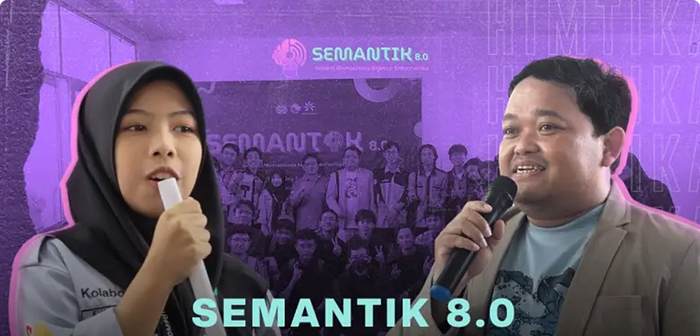

Semantik 9.0
“Melepaskan Potensi: Mengubah Ide
Menjadi Prestasi”

“Melepaskan Potensi: Mengubah Ide
Menjadi Prestasi”
SEMANTIK 9.0 adalah wadah bagi mahasiswa informatika unsika untuk menunjukan bakat dan keahlian melalui ajang kompetisi hard skill dalam bidang informatika.


Membangun semangat kompetitif di kalangan mahasiswa untuk terus belajar dan meningkatkan kemampuan mereka melalui persaingan yang positif.
23 Maret - 1 April 2025
19 April 2025
21 April 2025
23 April 2025
24 April 2025
26 April 2025
Lihat momen-momen inspiratif dari kegiatan SEMANTIK 9.0, di mana mahasiswa Informatika Unsika berkumpul, berkompetisi, dan berkolaborasi. Dari presentasi ide inovatif hingga sesi diskusi yang mendalam, setiap kegiatan memperlihatkan semangat dan kreativitas para peserta. Saksikan bagaimana acara ini menjadi ajang berharga untuk mengasah kemampuan hardskill di bidang Informatika.
Saksikan perjalanan dan momen-momen terbaik dari SEMANTIK 9.0 dalam after movie ini! Dari kompetisi yang seru hingga kolaborasi yang penuh semangat, video ini menangkap setiap momen berharga yang tercipta. Mari rasakan antusiasme dan inspirasi dari mahasiswa Informatika Unsika yang berpartisipasi dalam ajang kompetisi ini. Klik play untuk menyaksikan semangat berkreasi dan berkompetisi di SEMANTIK 9.0!

Jika anda memiliki pertanyaan lain, kontak kami dengan klik tombol di bawah ini